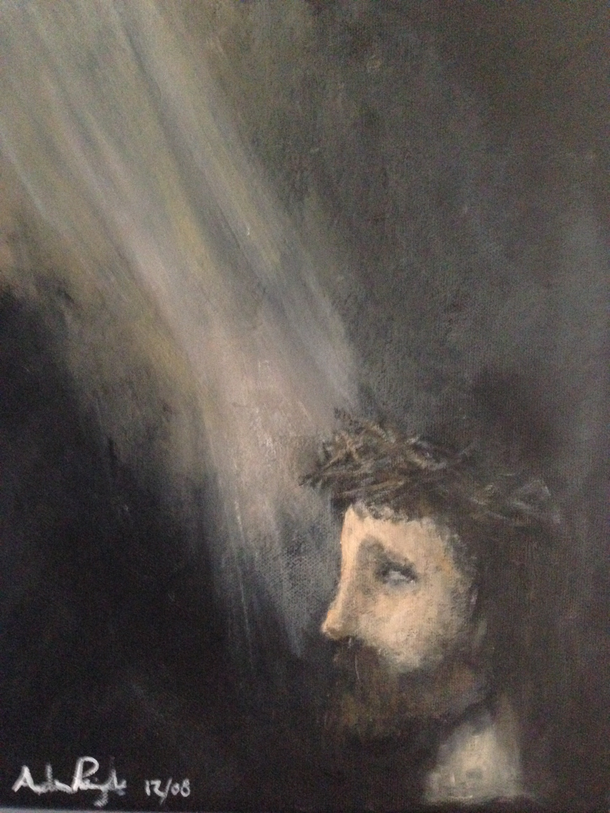

The Risk of Christ
by Will Smee
Music

I Am the Door by Will Smee
Bread of God by Will Smee
I Love You Creator by Will Smee and Stephanie Yule
What Would It Look Like by Will Smee
You Are Beloved by Will Smee, with Julianne Maki
In My Father’s House (John 14:1-4) by Will Smee
Psalm 17 (Hear Oh Lord) by Will Smee
Come Unto Me (Matthew 11:28,29) by Will Smee
Lord I Believe by Will Smee (from Mark 9:24, and Mark 9:17-29)